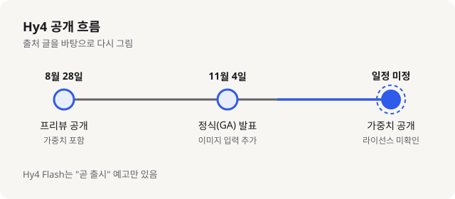
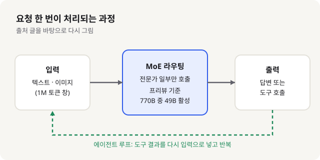

Tencent Hy4 정식 발표: 770B 규모 MoE 모델, 가중치는 아직 없음, 입문 개발자가 알아야 할 것
- Tencent가 11월 4일 Hy4를 정식(GA) 발표했다. 8월 말 프리뷰에 이어진 두 번째 단계다.
- MoE(전문가 혼합) 구조로, 프리뷰 기준 총 770B 파라미터 중 토큰당 49B만 쓰고, 이번 정식판은 이미지 입력을 처리할 수 있다고 한다.
- 입문자에게는 API로 바로 써 볼 수 있는 대형 모델이 늘었다는 뜻이다. 다만 가중치 공개 일정과 라이선스는 아직 확인되지 않았다.
11월 첫 주 중국 모델 발표 가운데 Tencent Hy4가 가장 눈에 띄었다. 큰 모델을 가볍게 쓸 수 있는 방향, 즉 API로 먼저 열고 나중에 파일을 내려받게 하는 방식이 이번에도 반복되고 있어서다. 이 글은 발표 자료와 보도, 호스팅 업체 페이지 세 곳을 직접 읽고 정리했다. Tencent 공식 발표 페이지는 접근이 막혀 열지 못했다.
01한눈에 보기
큰 식당에 주방장 100명이 있다고 해 보자. 주문이 들어올 때마다 100명이 전부 움직이면 비효율적이니, 요리 종류에 맞는 몇 명만 불러서 만든다. Hy4가 쓰는 MoE(Mixture of Experts, 전문가 혼합) 구조가 이런 방식이다. 전체 파라미터는 아주 크지만, 한 번 답할 때 쓰는 부분은 일부다. 프리뷰 공개 자료 기준으로 총 770B 파라미터 가운데 토큰당 49B가 활성화된다고 호스팅 업체 페이지는 전한다.

02어떻게 동작하나요
입력은 텍스트와 이미지다. 호스팅 업체 OpenRouter 페이지에는 입력이 텍스트와 이미지, 출력이 텍스트로 적혀 있다. 입력을 받으면 라우터가 어떤 전문가를 부를지 고르고, 선택된 전문가만 계산해 결과를 낸다. 컨텍스트 창(한 번에 읽을 수 있는 글의 길이)은 1,048,576토큰, 약 100만 토큰으로 나와 있다. 한 번에 긴 코드베이스나 문서를 넣을 수 있다는 뜻이다. 최대 출력은 65,536토큰이다.

Tencent는 Hy4를 에이전트 용도로도 설명한다. 마우스와 키보드로 화면을 조작하거나 CLI와 GUI를 섞어 쓰는 작업을 목표로 한다고 하는데, 이 내용은 호스팅 업체 블로그가 전한 Tencent 주장이고 Tencent 원문은 확인하지 못했다.
03왜 지금 화제인가요
정식 발표 자체는 11월 4일이다. 여러 자료가 같은 날짜를 가리킨다. 보도(KrASIA, 닛케이 아시아 기사 재게재)는 11월 5일 게재됐고, 프리뷰와 비교해 Hy4가 이미지를 처리·분석할 수 있게 된 점을 강조했다. 반응 중 눈에 띄는 것은 성능 주장이다. Tencent는 에이전트 코딩 과제에서 Claude Opus 5.5를 앞섰다고 밝혔다고 보도됐다. 같은 보도에 따르면 AI 기반 연구 과제에서는 Kimi K3.1 Pro와 GPT 6.1 Sol에 뒤진다고도 한다. 주장과 한계가 함께 나온 셈이다.
이 세 자료는 정식 발표의 사실관계는 대체로 맞춘다. 다만 성능 수치는 대부분 Tencent가 낸 자체 평가이거나, 호스팅 업체가 옮겨 적은 수치다. 독립적인 공개 벤치마크로 검증된 결과는 아니다.
04관련 나라·기업
| 구분 | 이름 | 어떤 관련이 있나 |
|---|---|---|
| 나라 | 중국 | Hy4를 만든 Tencent의 본사 소재지 |
| 기업 | Tencent | Hy4 개발과 정식 발표. 가중치 공개 시기는 밝히지 않음 |
| 기업 | OpenRouter | Hy4를 API로 묶어 파는 모델 게이트웨이. Tencent Cloud가 공급자로 나와 있음 |
05기존 방식과 무엇이 다른가
예전 큰 모델은 대부분 전체 파라미터를 매번 쓰는 구조였다. MoE는 같은 덩치라도 한 번에 쓰는 양을 줄여 비용과 속도 면에서 유리하다. 아래 표는 일반적인 차이를 정리한 것이고, Hy4 수치는 호스팅 업체 페이지에 있는 것만 적었다.
| 비교 항목 | 기존 밀집(Dense) 모델 | Hy4 |
|---|---|---|
| 계산 방식 | 파라미터 전부를 매번 사용 | MoE, 프리뷰 기준 토큰당 49B 활성 |
| 입력 형식 | 모델마다 다름 | 정식판은 텍스트와 이미지 입력(OpenRouter 기준) |
| 컨텍스트 | 모델마다 다름 | 약 100만 토큰(1,048,576) |
| 가중치 접근 | 공개 모델은 내려받아 직접 실행 가능 | 정식판 가중치는 아직 확인되지 않음. 호스팅 API로 먼저 이용 |
| 가격(OpenRouter 표기) | 모델마다 다름 | 입력 100만 토큰당 약 $0.834, 출력 약 $2.501 |
06직접 해 보기
이번 글에서는 실제 호출 코드를 확인하지 못했다. 그래서 명령이나 코드는 싣지 않고, 확인 가능한 단계만 정리한다.
- OpenRouter에서
tencent/hy4모델 페이지를 열어 컨텍스트 길이, 최대 출력, 가격을 직접 확인한다. - OpenRouter 계정을 만들고 API 키를 발급받는다. 발급 방법은 OpenRouter 공식 문서에서 확인한다.
- 가장 짧은 질문 하나를 보내 텍스트 응답을 받아 본다. 이미지 입력을 시험하려면 같은 모델 페이지에 적힌 입력 형식을 따른다.
- 같은 질문을 Hy4와 익숙한 다른 모델에 보내서 답의 차이를 비교한다. 입문 단계에서는 이 비교가 가장 많이 배운다.
07주의할 점과 한계
- 가중치 공개 일정이 없다. Tencent는 프리뷰를 오픈 웨이트로 공개했지만, 정식판에 대해서는 "언제"를 밝히지 않았다고 보도가 전한다.
- 정식판의 라이선스는 확인하지 못했다. 프리뷰는 Apache 2.0으로 공개됐다는 것이 호스팅 블로그의 설명이고, 정식판에 같은 조건이 적용되는지는 불분명하다.
- 770B, 49B 활성 같은 규모 수치는 프리뷰 기준이다. 정식판에서 바뀌었는지는 확인하지 못했다.
- 할루시네이션, 에이전트 작업 점수 같은 수치는 Tencent 자체 평가다. Artificial Analysis 지수는 OpenRouter 페이지에 34.6으로 나와 있지만, 같은 시기 다른 모델과의 순위는 확인하지 못했다.
- Hy4 Flash는 "곧 출시"라고만 예고됐다. 날짜가 없으니 기다리지 말고 나오면 확인하자.
08정리
Hy4 정식판은 큰 모델을 MoE로 나눠 쓰는 흐름이 중국 모델에서도 계속된다는 신호다. 입문 개발자 입장에서 가장 쓸모 있는 부분은 API로 100만 토큰 컨텍스트를 바로 시험해 볼 수 있다는 점이다. 반대로 가중치를 내려받아 내 컴퓨터에서 돌리는 일은 아직 기다려야 한다.
성능 발표는 항상 제조사가 고른 과제에서 나온다. 같은 질문을 두세 모델에 던져 보고, 공식 발표와 호스팅 페이지에서 날짜와 수치를 직접 확인하는 습관이 이런 소식을 다루는 가장 안전한 방법이다.
09참고한 글
- Tencent Hy4 GA 발표, 비전과 컴퓨터 사용 (OrcaRouter 블로그) orcarouter.ai · 2026.11.04
- Tencent says its Hy4 joins top tier of open-source AI models (KrASIA, 닛케이 아시아 재게재) kr-asia.com · 2026.11.05
- Hy4 모델 페이지 (OpenRouter) openrouter.ai · 2026.11.04 릴리스 표기
- AI 릴리스 트래커 2026년 11월 (nocode.mba) nocode.mba · 2026.11.07 갱신